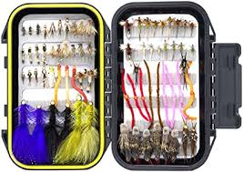

 When you walk into a flyshop the amount of different flies can turn any man mad. These articles are to help you spend less time in the store or reaearching flies to use and more time in the water putting fish after fish in the net. We also offer a 4 season assortment of flies that has all the secret flies we have used over the years. The box is set in the easiest way possible. Spring flies are in the top left corner. Summer flies are in the top right corner. Fall flies are in the bottom left corner. Winter flies are in the bottom right corner.